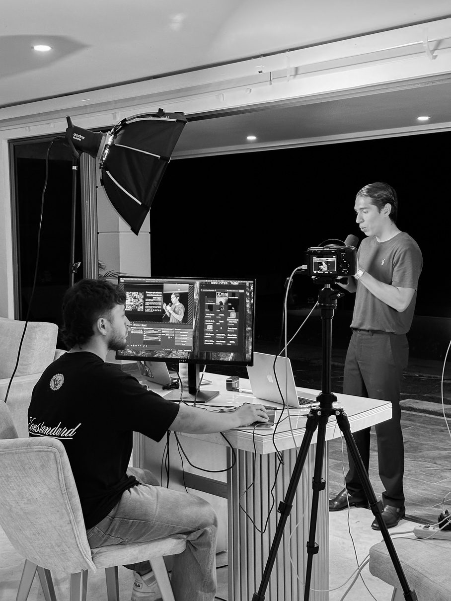
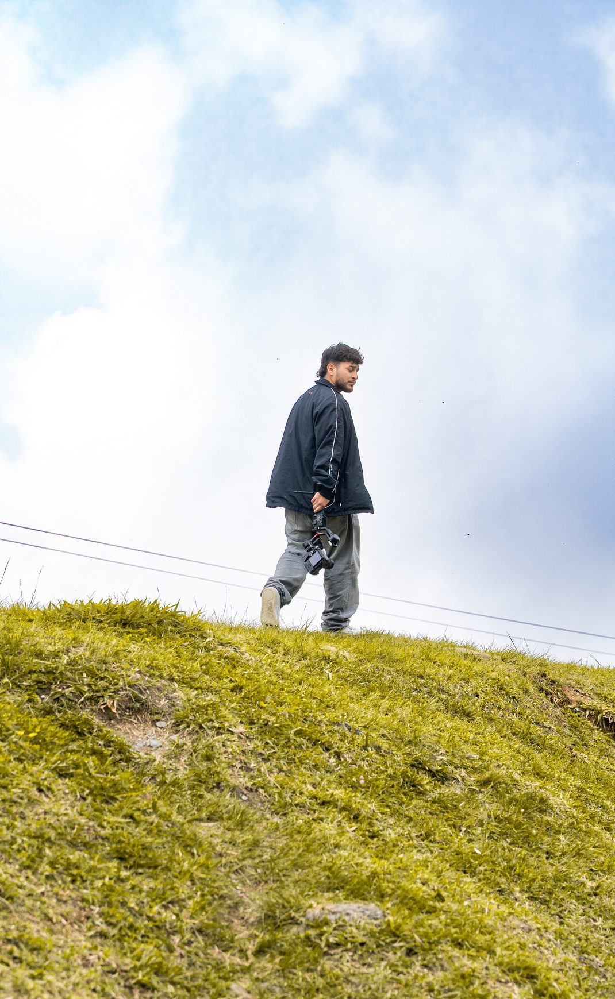
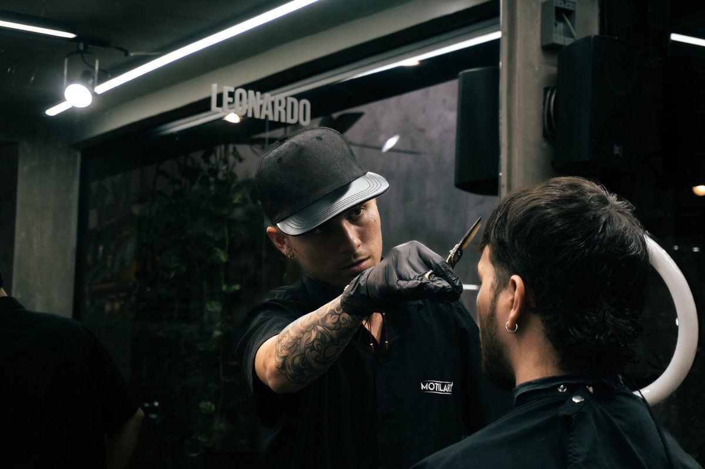
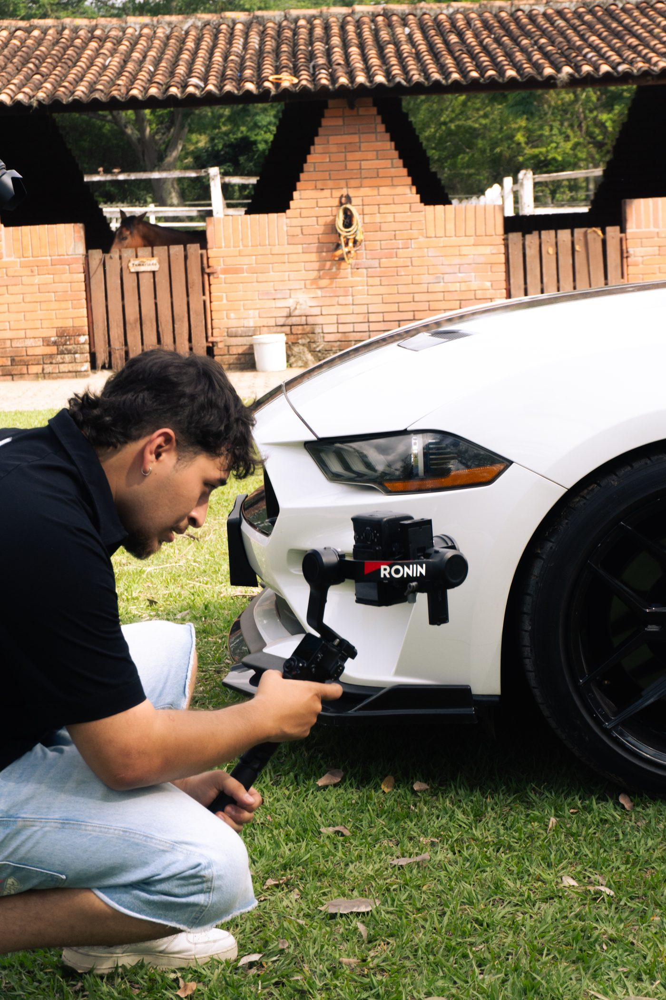
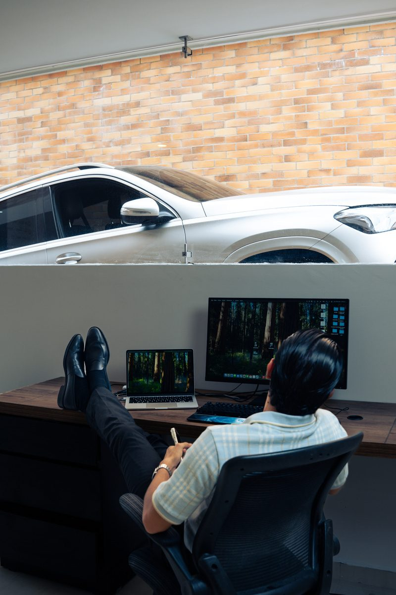

Hola! Soy Brant
Director creativo y Filmmaker. Exploro el cine, el diseño y el storytelling para transformar ideas en experiencias visuales.

@bacu_creative

Experiencia De Trabajo
He desarrollado mi experiencia en distintos sectores del audiovisual, especialmente en la creación de contenido para redes sociales; sin embargo, mi principal interés está enfocado en el cine y la televisión. A lo largo de estos procesos, he participado en múltiples áreas del cine, incluyendo producción, dirección, sonido, cámara, asistencia de iluminación y creación de espacios cinematográficos. Esto me permite tener una visión integral de cada proyecto y aportar de manera versátil en distintos roles.
Trayectoria freelance 2023 – 2026
- JetSky — Realizador audiovisual (1 año)
- Canal TRO — Producción y realización audiovisual (proyectos)
- Marcas y empresas — Producción de contenido comercial y corporativo
- Marcas personales y artistas — Dirección creativa y contenido digital
- Cine y televisión — Cortometrajes, documentales y programas de televisión
Habilidades
Oficio y herramientas
Disciplinas
Fotografía · Videografía · Dirección · Producción · Edición · Color · Sonido
Software
- Premiere Pro
- DaVinci Resolve
- Photoshop
- Lightroom
Habilidades audiovisuales

Fotografía
Mi fotografía está influenciada por el lenguaje cinematográfico, explorando la luz, el encuadre y la atmósfera para construir imágenes que parecen fragmentos de una historia.

Videografía
Me adapto a distintos roles y dinámicas de producción, entendiendo las necesidades de cada proyecto y aportando desde la técnica, la creatividad y la resolución en campo.

Edición
Edición enfocada en narrativa, ritmo y coherencia visual, transformando brutos en piezas dinámicas y atractivas usando Premiere y DaVinci Resolve.